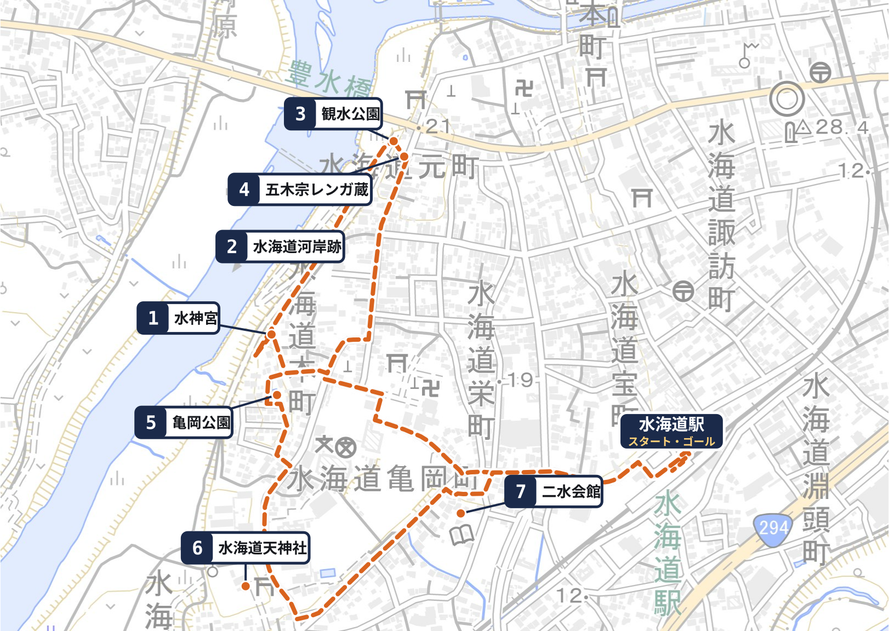

道案内と地図
歩く道のり 約3.3km・かかる時間 約2時間（休けいをふくむ）。トイレは水海道駅と水海道天神社です。

1 水神宮へ徒歩11分
駅を出たら、線路を背にして、西へ進みます。
鬼怒川の土手に突きあたる手前、右手に、小さな石のほこらがあります。
迷ったら 川の土手をめざしてください。
土手に着いたら、ほこらはすぐそばです。
冊子の 8 ページ
2 水海道河岸跡へ徒歩4分
土手の上に登り、右へ（川を左に見て）進みます。
小さな建物の手前、土手の上に、細長い石の柱が立っています。
字がうすいので、見落とさないでください。
迷ったら 土手の上を、右へ。石の柱は、小さな建物の近くです。
冊子の 10 ページ
3 観水公園へ徒歩6分
土手の上を、そのまま進みます。前に、大きな橋（豊水橋）が見えてきます。
橋の手前で、右手に公園が見えます。土手から、公園の裏手に下りられます。
※名前の看板はありません。ベンチと、屋根のある休けい所が目じるしです。
迷ったら 土手の上を、橋に向かって。右下に公園が見えたら、そこです。
冊子の 12 ページ
4 五木宗レンガ蔵へ徒歩1分
公園を出て、道路をわたった、ななめ向かいです。
レンガづくりの、塔のように高い蔵です。
⚠ 道をわたるときは、車に気をつけてください。
⚠ 蔵の前は道がせまく、歩道がありません。車が来たら、塀に寄ってください。板を見たら、観水公園にもどって書きましょう。
冊子の 16 ページ
5 亀岡公園へ徒歩9分
観水公園から、レンガ蔵の前の通りを、南へまっすぐ進みます。
右手に消防団の車庫、左手に愛宕神社をすぎると、道が右へ曲がります。
その先で右の細い道へ入り、つきあたりを左へ。少し先の左がわが、亀岡公園です。
迷ったら レンガ蔵の前の通りにもどって、南へ。愛宕神社が目印です。
［下書き・要現地確認］
冊子の 18 ページ
6 水海道天神社へ徒歩5分
亀岡公園から南へ。石材店の広い道を右へ。
ふれあい館の先を右へ。天神社の鳥居です。
※トイレがあります。［下書き・要現地確認］
迷ったら 「天神様はどちらですか」と、近くの方に聞いてください。
冊子の 20 ページ
7 二水会館へ徒歩5分
天神社を出て、東へ（駅のほうへ）もどります。
常総市立図書館の敷地に入ると、白い古い建物が建っています。それが二水会館です。
迷ったら 図書館の大きな看板をさがしてください。
冊子の 22 ページ
水海道駅へ徒歩8分
図書館を出て、東へ。来た道を、駅までもどります。
迷ったら 線路をめざしてください。
冊子の 24 ページ
［踏査して確定］の所は、現地を歩いて、あとで書き足します。